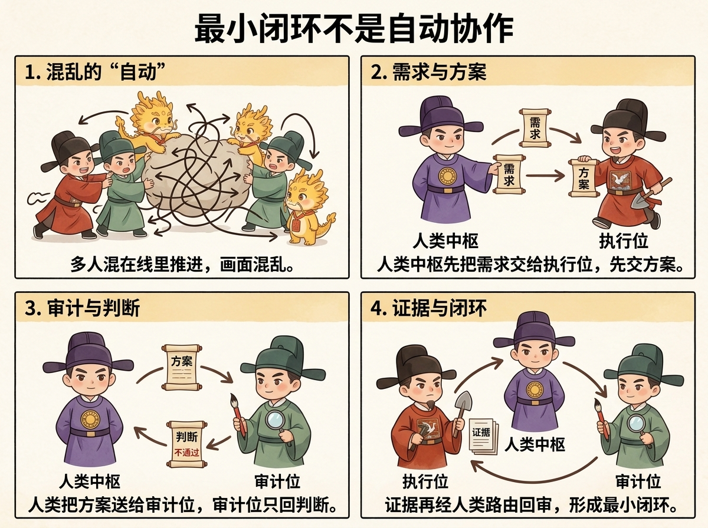

01
这是什么体系
它是一套可教学的项目治理方法：皇权居中明确最终裁断，原子合同限定执行边界，独立审计隔离自证幻觉，起居注让后继者能读懂现场。
01
它是一套可教学的项目治理方法：皇权居中明确最终裁断，原子合同限定执行边界，独立审计隔离自证幻觉，起居注让后继者能读懂现场。
02
首页同时承担项目门面和课程入口。它先提出治理主张，再给出可信结构、安装方式和学习路径，让访问者知道这里要学的是一套治理体系，而不是浏览普通产品说明。
03
仓库提供 npm CLI 与 Codex skill 形态。安装后先运行 doctor 检查本地环境，再从入口页复制最小闭环提示词，按合同、执行、审计、证据的顺序练习。
npm install -g @blackzhanzhan/cyber-ming
cyber-ming doctor04
如果你要学习这套治理体系，从入口页开始；如果你要评估完整方法论，继续阅读六卷目录。每一卷都对应一个治理问题，而不是松散文章集合。
进入教学入口
六卷教学目录